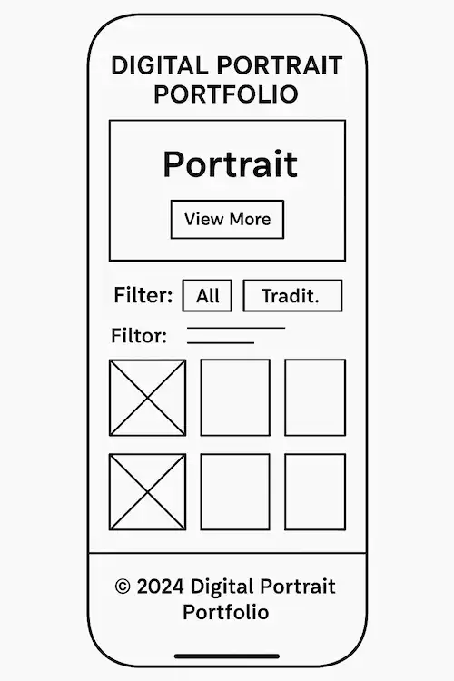

Site Name
Digital Portrait Portfolio - This name represents an online gallery focused on displaying artistic digital portraits with user interactivity for ratings and comments.
Site Purpose
The website serves as an interactive portfolio to showcase original digital portrait artwork, allowing users to filter pieces by style and provide feedback through ratings and comments.
Scenarios
- Can I view the artist's work filtered by cartoon, realism, or sketch styles?
- Can I rate or comment on a digital portrait I really liked?
Color Schema
- #3a3a3a - Used for text and headings (dark gray)
- #f2c4de - Used for backgrounds and accent areas (pastel pink)
Typography
- Montserrat - Headings
- Roboto - Body text
Wireframe
Mobile View:
Desktop View: